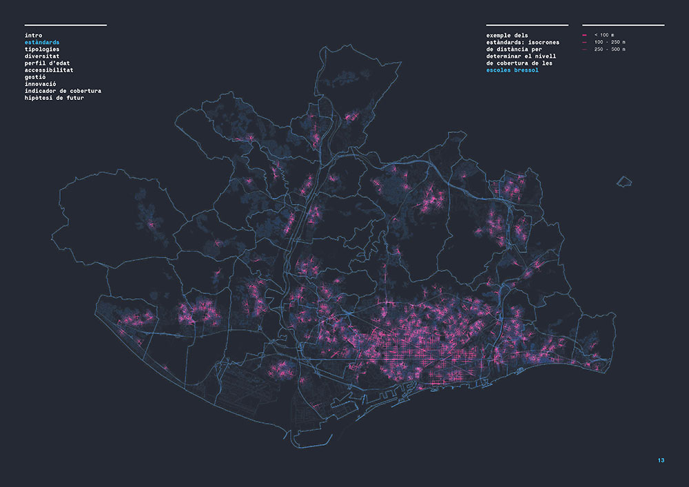

Public facilities
For the last few decades, all metropolitan municipalities of Barcelona have made an effort to offer public facilities for a diverse society of around 3 million inhabitants. From schools to hospitals, sports centres to music halls and libraries, these spaces of interaction are not only spatially well distributed, but also almost 100% accessible from the existing public transport system. Thus, a first analysis maps the territory in terms of typologies’ diversity, age-group coverage and distribution and accessibility, and ponders all these aspects in a single index, the so-called “coverage index”. After recognising the current state of these, a further more complex analysis is carried out to address some of their future major challenges: what synergies can be fostered between different public facility types to guarantee a more sustainable management of these very often enormous buildings? Which facilities’ typologies promote innovation and how could these achieve a major positive impact on their surrounding territory? How should public facilities look like in the near future to guarantee their mission as efficient service providers?

